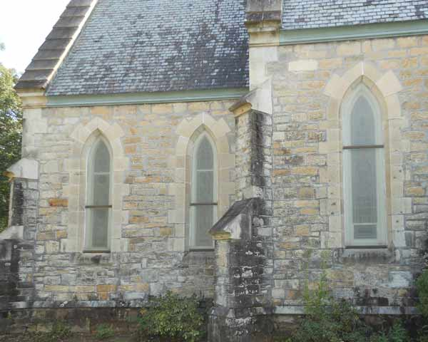
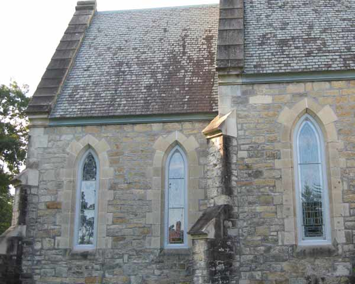

Protective Glazing Systems
Clear protective glazing - Trinity Cathedral | Columbia, SC
Shenandoah Restorations Inc. can provide protective secondary glazing systems for your windows. These clear, safety glass panels fit smoothly in front of your windows. They offer nearly invisible protection for your project and can lengthen the life of your stained glass windows.
Shenandoah Restorations, Inc. makes and installs protective secondary glazing systems that are aesthetically pleasing, low-maintenance, and meet building codes and restoration standards.

Before: old window protection

After: new clear protective glazing - Church of the Nativity | Union, SC